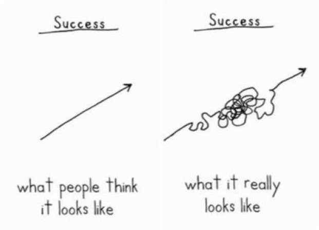
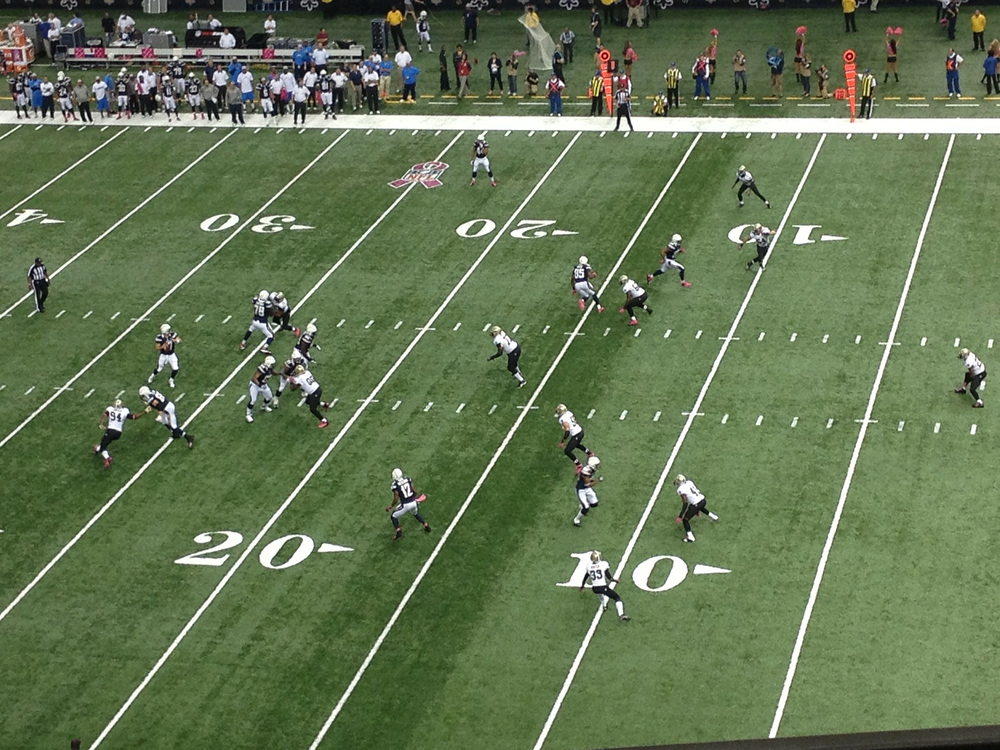

Latest Posts
-
How to Get More Hours of Sleep
Vivian Hir | 24 Feb 2019
get extra minutes of sleep without having to sacrifice your grades and activities
-

A Classical Music Revival
Vivian Hir | 18 Feb 2019
Note: I am not saying that classical music is the best music genre. Rather, I am mentioning how classical music played some role in my personal growth.
-

The Hardest Thing to Accept: Inevitability of Mistakes
Vivian Hir | 16 Feb 2019
Mistakes made and lessons learned
-

3rd Quarter winners are the Super Bowl losers
Daniel Formella | 08 Feb 2019
an analysis of how the Patriots beat the Rams in Super Bowl LIII
-
Lessons I Learned from Science Olympiad
Vivian Hir | 04 Feb 2019
The Science Olympiad is like a decathlon
-
-
Three Week Digital Minimalism Human Study Results
Vivian Hir | 30 Jan 2019
You won’t believe these results!
-
-
-
-

-
-

"Nothing Special" - Interviews with Regular People - Part Two
Anthony | 20 Dec 2018
Interviews with regular people
-

Reality, Racism, and Resilience: I Know Why The Caged Bird Sings Review
Anthony | 08 Dec 2018
A review of Maya Angelou's classic 1969 autobiography, from a student perspective.
-

-
"Nothing Special" - Interviews with Regular People - Part One
Anthony | 29 Nov 2018
Interviews with regular people
-

Why you shouldn't wear shoes inside
Anthony | 14 Nov 2018
2 Great (and 1 Not-so-great) Reasons Why You Shouldnt Wear Shoes Inside
-
What does it take to be a varsity athlete?
Allen Z | 12 Oct 2018
A conversation with three high-school athletes
-
The Green Bay Packers versus the Argentinian National Team
Daniel F | 11 Oct 2018
Comparing the Packers of American football with the Argentinian international football team
-

How to prepare for your SATs and ACTs
Moiz | 03 Oct 2018
The secret to success on the standardized tests
-

What does it take to qualify for the All-State Band?
Allen Z | 26 Sep 2018
An interview with two All-State players
-
How to find your niche in high school
Moiz | 26 Sep 2018
Finding your place in the world of 9th through 12th graders
-
Fats and Healthy Eating: They Don't Wanna Taco 'Bout it
Daniel F | 26 Sep 2018
The truth about the fats and sugars in your food
-
How to Get Started Coding as an Absolute Beginner
Anthony | 25 Sep 2018
An infographic guide to learning and applying programming skills, for an absolute beginner.
-

What does it take to get a 4.0 GPA?
Allen Z | 19 Sep 2018
A conversation with students who have perfect GPAs
-

Pizza Rolls: Convenience or Laziness?
Anthony | 16 Sep 2018
The ethical dilemma behind a staple of the frozen aisle
-

How to Make Better Toast
Anthony | 09 Sep 2018
A handy flowchart for all your toast-making questions